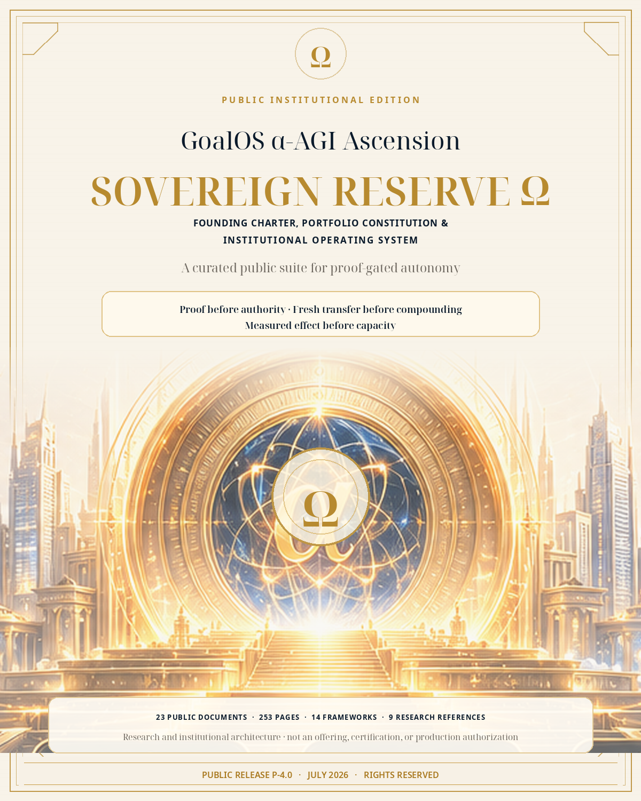
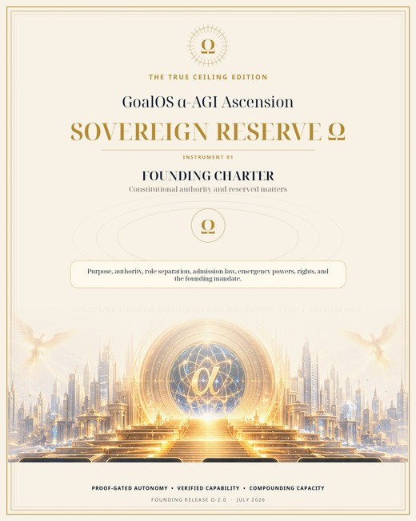
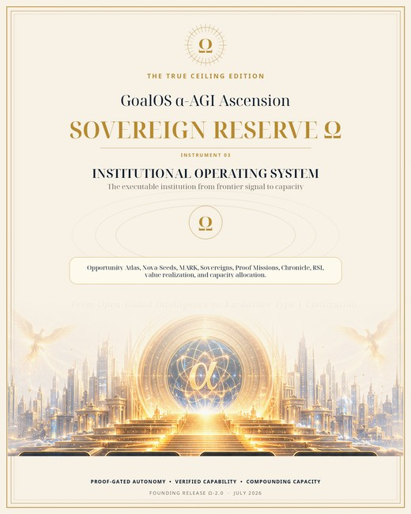
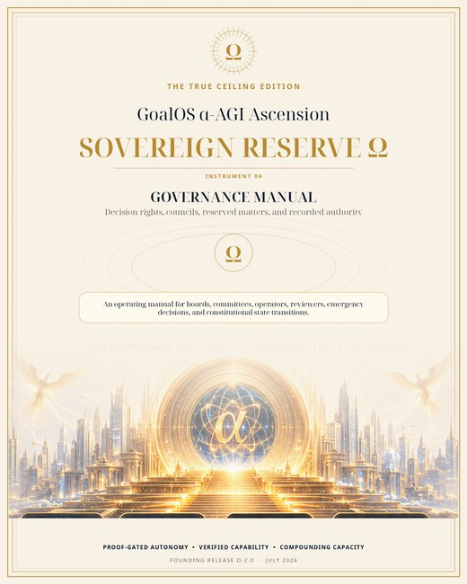
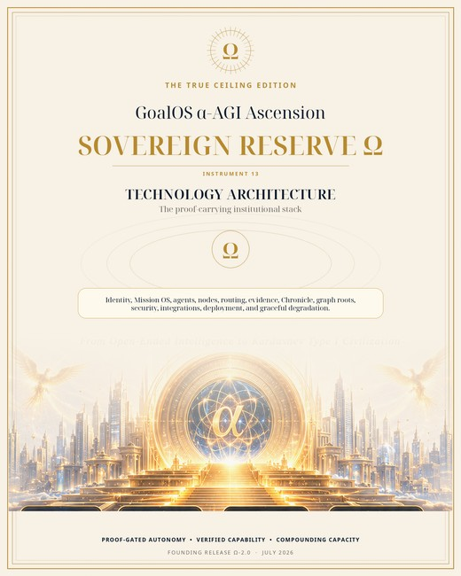
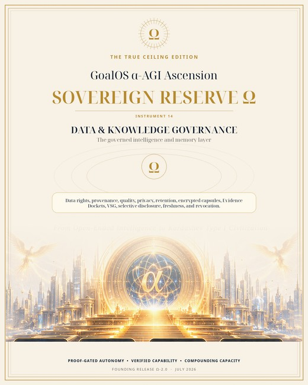
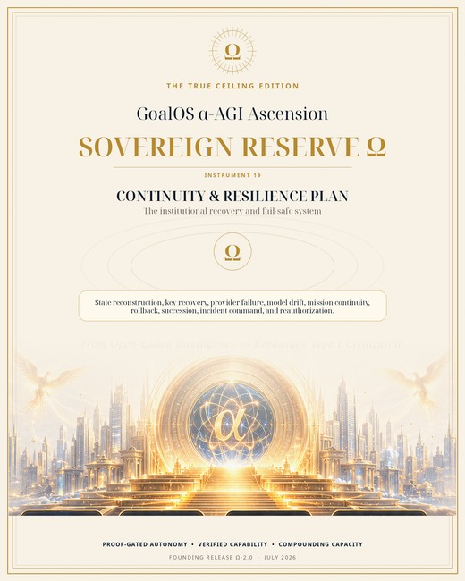
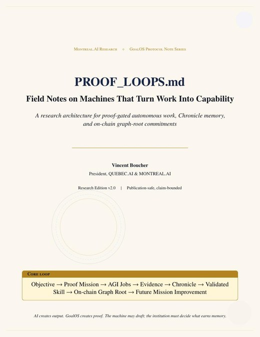
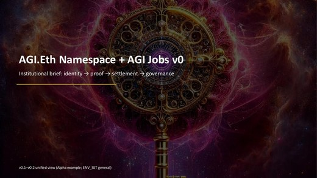
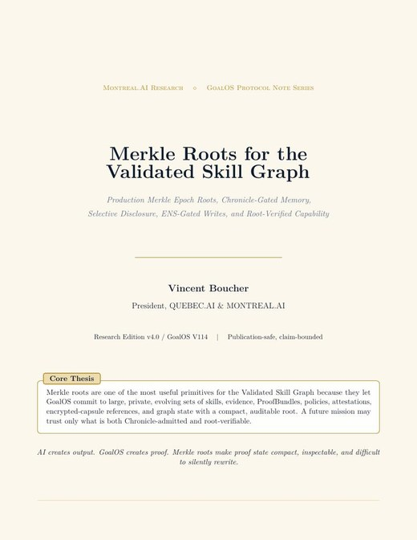

Founding Charter
Purpose, authority, hierarchy, role separation, reserved matters, admission law, emergency powers, rollback, and the bounded founding mandate.
Open Volume I →Founding Charter, Portfolio Constitution & Institutional Operating System — restored to the prestige of the complete suite, curated for responsible global publication.
Experimental research and institutional architecture. No token sale, investment solicitation, promise of return, production certification, unrestricted authority, or claim of achieved AGI, ASI, superintelligence, or physical Type I capacity.

The Charter determines who may decide. The Constitution determines what may be admitted and stewarded. The Operating System determines how opportunity becomes proof, governed memory, value, and bounded productive capacity.
Purpose, authority, hierarchy, role separation, reserved matters, admission law, emergency powers, rollback, and the bounded founding mandate.
Open Volume I →Asset classes, proof, rights, safety, transfer, value, stewardship, concentration, freshness, revocation, and disposition.
Open Volume II →Operating rooms from opportunity intelligence and Nova‑Seeds through Proof Missions, Chronicle, Mission 2, value realization, and capacity allocation.
Open Volume III →GoalOS generalizes autonomous improvement from one agent harness to a proof-gated intelligence institution. Every proposed improvement remains candidate work until the next evidentiary and governance gate passes.
Models and agents may propose and act. Evidence, review, scope, freshness, rights, and rollback determine what may matter next.
Only Chronicle-admitted, evidence-backed, scoped, replayable, and revocable capability may influence future missions.
Opportunity scores and novelty allocate attention; they cannot bypass baselines, proof, risk, rights, or safety gates.
A fresh adjacent mission under comparable constraints must show that retained capability actually improves future work.
Every promoted capability retains an incumbent, canary boundary, stop condition, recovery route, and reauthorization gate.
Scenario value, modeled benefit, or token activity does not establish productive capacity. Real effects require real evidence.
The release publishes the doctrine and proof standards, places investment-sensitive material under separate review, and withholds confidential or security-sensitive working information.
23 curated documents. Search by proof, governance, RSI, Chronicle, routing, safety, identity, or institutional purpose.

Defines purpose, authority hierarchy, admission gates, rights, rollback, and the bounded mandate of Sovereign Reserve Ω.

Governs asset classes, evidence levels, rights, safety, Mission 2 transfer, disposition, freshness, revocation, and concentration.

Maps the operating rooms from opportunity signals and Nova-Seeds through proof, Chronicle, value realization, and capacity allocation.

Defines decision rights, delegation, conflicts, reserved matters, escalation, and institutional records.

Defines risk classes, prohibitions, canaries, monitoring, stop conditions, incident handling, and rollback.

Defines proof levels, Evidence Dockets, reviewer independence, replay, dissent, and claim-state discipline.

Describes system boundaries, evidence state, Chronicle, graph roots, security, integrations, conformance, and release gates.

Governs provenance, purpose limitation, access, retention, transformation, evidence linkage, and controlled knowledge reuse.

Defines baseline discipline, falsification, high-novelty skepticism, reproducibility, and research-to-capability transitions.
Defines accountable roles, protected dissent, competence, wellbeing, security culture, and human decision ownership.

Defines claim-status vocabulary, publication review, corrections, source lineage, confidentiality, and incident communications.

Defines internal audit, external assurance, technical conformance, rights review, findings, severity, remediation, and follow-up.

Defines continuity, recovery priorities, minimal state reconstruction, communication, restoration tests, and reauthorization.
Defines proof-gated changes to charters, policies, models, agents, routing, schemas, and institutional controls.

Formalizes Objective → Proof Mission → AGI Jobs → Evidence → Chronicle → Validated Skill → Graph Root → Future Mission Improvement.

Describes deterministic open-ended discovery, baseline-comparative evaluation, replay, stress, persistence, dossiers, and governed promotion.

Describes role-aware identity, scoped environments, proof-bearing work, validation, settlement, and bounded governance.

Describes commit-reveal routing, deterministic selection, receipts, challenges, and auditable allocation. Technical research only.

Separates committed graph state from Chronicle authority and supports selective disclosure, continuity, revocation, and verification.

The canonical proof-to-capability operating system, including object model, evidence status, threat model, deployment path, and Proof Run 001.

Defines proof-carrying capability memory with scope, provenance, validators, freshness, rollback, revocation, and bounded reuse.

Explains the Governed Decision State, proof-to-action work, publication law, commercial wedge, conformance, and safety boundary.

Defines proof-backed upgrade rights, public-private boundaries, evaluation, canaries, challenge windows, rollback, and evolution ledgers.
Run one bounded mission from Mission Contract through Proof Debt, AGI Jobs, Evidence Docket, independent review, Chronicle, and Mission 2. No data leaves the browser; no wallet or asset movement occurs.
Ready. Select a scenario and run the public-safe proof loop.
The system will distinguish what passed, remains conditional, or is blocked.
A candidate may improve the harness, agent topology, tools, evaluator routing, memory, or policy. It cannot approve its own propagation.
—
The public edition distinguishes what is architecturally specified, what is implemented in reference form, and what still requires independent external evidence.
Mission Contracts, Proof Debt, AGI Jobs, Evidence Dockets, Chronicle, VSG, Merkle state, RSI, governance.
Public demonstrations, schemas, reference contracts, deployment packs, validation harnesses, publication controls.
AGI.Eth role grammar, ENS-style routing, commit–reveal selection, proof and receipt architecture.
Independent reviewers, signed verdicts, live testnet boundaries, and real-task Evidence Dockets.
Repeated Mission 2 transfer, attributable realized value, and measured productive-capacity improvement.
The complete public collection contains only approved public-safe materials. Separate legal, rights, privacy, security, and exclusion records remain visible and versioned.
All 23 approved PDFs, public notices, manifest, and checksums.
The constitutional trilogy plus the core proof, Mission OS, AEP-001, and claim-boundary materials.
Repository instructions, Pages workflow, live-site checklist, publication manifest, and audit report.
Before launching a demonstration or downloading a package, confirm the following: